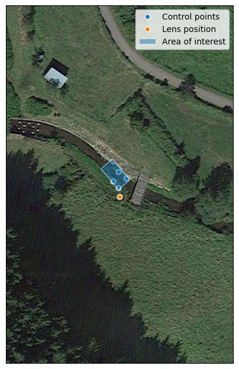
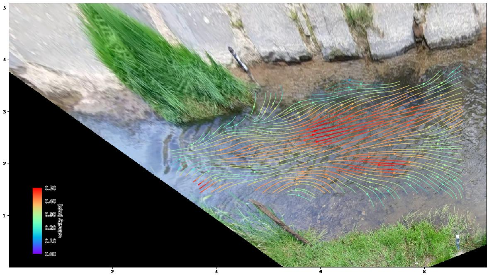
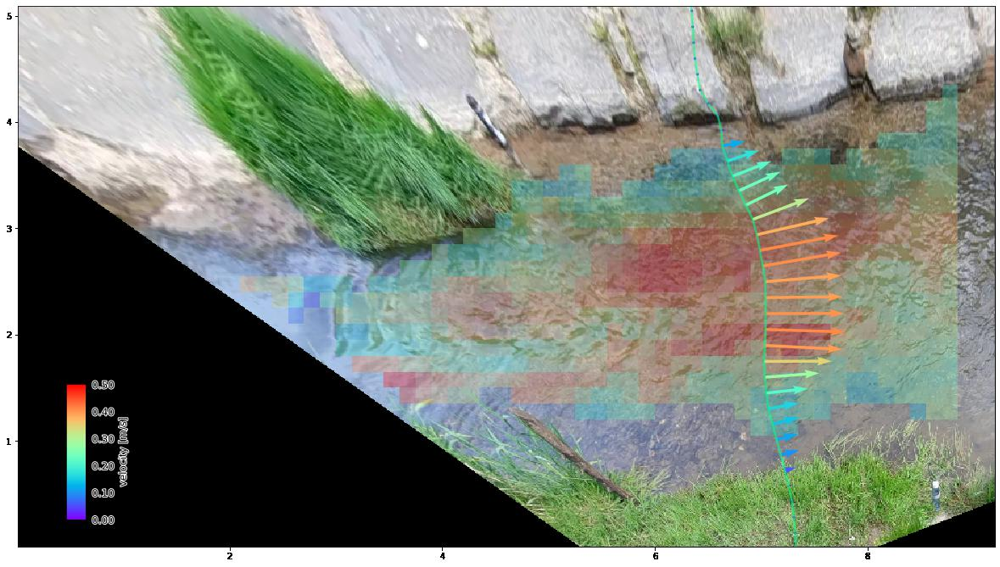

Introduction#
pyOpenRiverCam in a nutshell#
pyOpenRiverCam is a Command-line interface and Application Programming Interface (API) to preprocess, reproject, and analyze videos of rivers, in order to estimate river flows. Below we provide an overview of all functionalities in a nutshell:
Feature |
Example |
|---|---|
Create geographical awareness of your videos using your own field observations |
 |
Work with, and pre-process video frames |

|
Enhance frames to improve visibility of tracers |

|
Reproject frames to metres- distance planar views |

|
Enhance gradients for improved feature detection |

|
Estimate flow velocity at the water surface using Particle Image Velocimetry. |
 |
Estimate river discharge over a supplied cross-section. Use smart functions to fill missing data. |
 |
Plot combined views in immersive local, geographical or camera perspectives. |

|